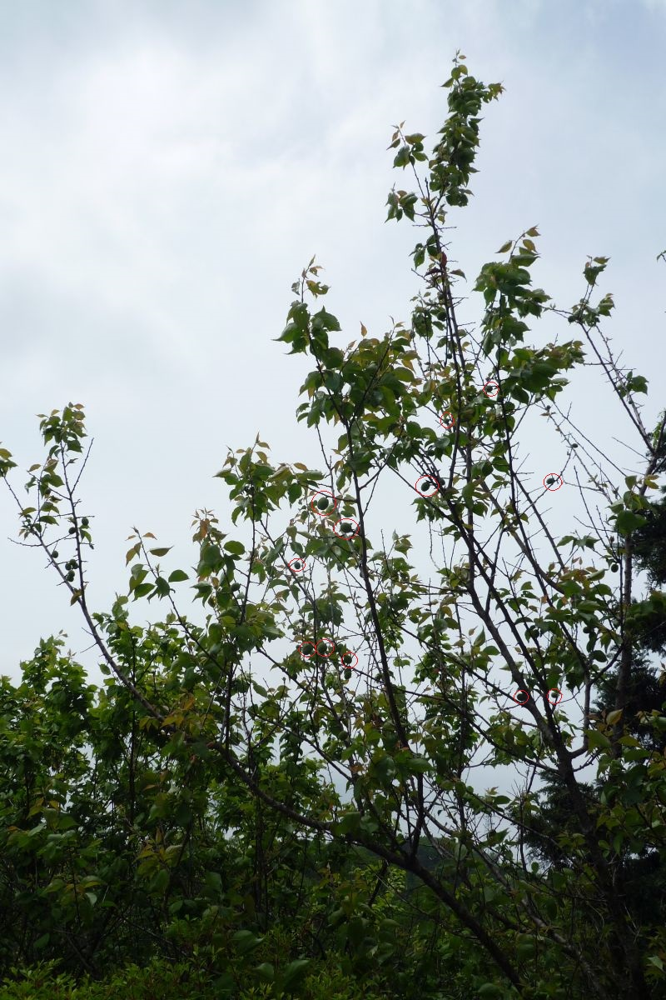

2020(R2) 5月
2020/05/26 14:01 近所
ハス かな？
2020/05/16 10:37 庭
梅、膨らんできました。

2020/05/14 14:38 近所
藤
2020/05/14 10:05 庭
クローバー満開。シロツメクサ
2020/05/07 14:14 近所
八重桜。
2020/05/05 10:41 庭
タンポポではない
2020/05/05 10:39 庭
これまでかな？
2020/05/02 15:02 庭
増えたかな？